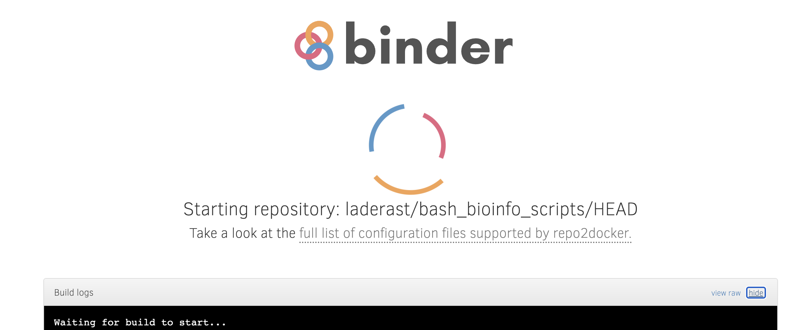
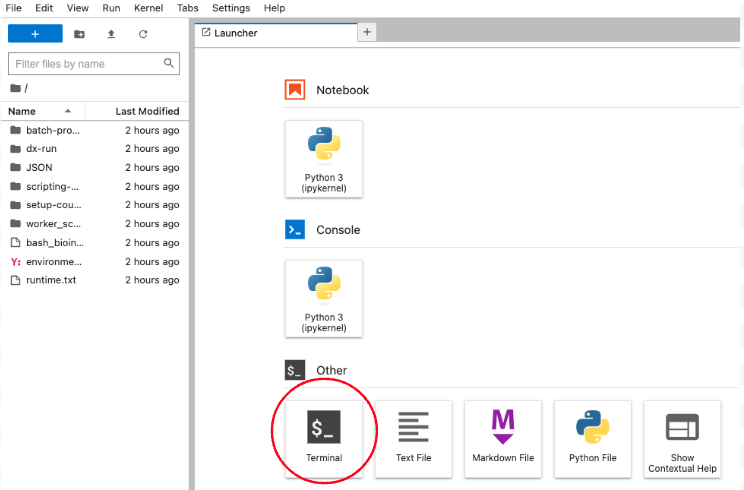
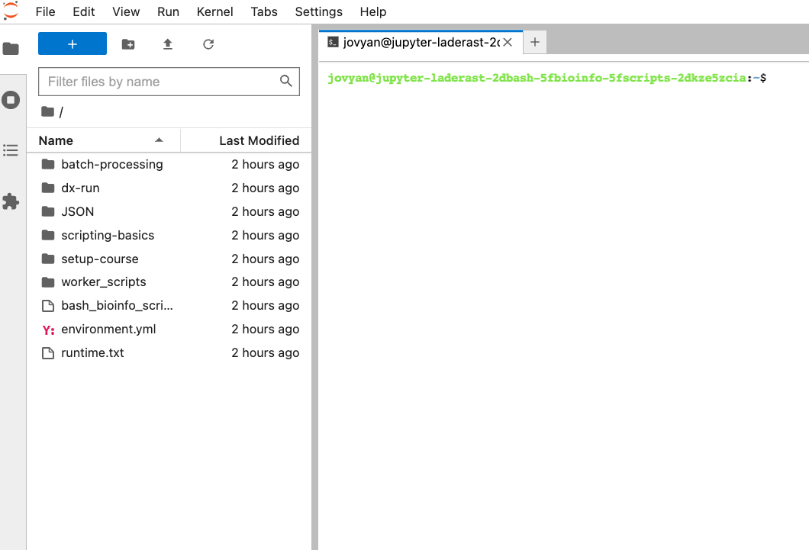

2 Setup for the Course / dx-toolkit basics
In this chapter, we’ll setup our DNAnexus account, start a project, get files into it, and run a job with those files.
This is meant to be a whirlwind tour - we’ll expand on more information about each of these steps in further chapters.
2.1 Setup your DNAnexus Account
First, create an account at https://platform.dnanexus.com. You’ll need your login and password to interact with the platform.
If you are not a registered customer with DNAnexus, you will have to set up your billing by adding a credit card.
I know that money is tight for everyone, but everything we’ll do in this course should cost no more than $5-10 in compute time.
2.2 Terminal setup / dx-toolkit setup
We’ll be running all of these scripts on our own machine. We’ll be using the command-line for most of these.
If you are on Linux/Mac, you’ll be working with the terminal. If you are on Windows, I recommend you install Windows Subsystem for Linux, and specifically the Ubuntu distribution. That will give you a command-line shell that you can use to interact with the DNAnexus platform.
On your machine, I recommend using a text editor to edit the scripts in your terminal. Good ones include VS Code, or built in ones such as nano.
Now that we have a terminal and code editor, we can install the dx-toolkit onto our machine. In your terminal, you’ll first need to make sure that python 3 is installed, and the pip installer is installed as well.
2.3 On Ubuntu
You should have a python3 installation - check by typing in:
which python3
If you get a blank response, then you’ll need to install it.
sudo apt-get install python3 ## If python is not yet installed
sudo apt-get install pip3
sudo apt-get install git
sudo apt-get install jqminiconda?
Installing miniconda (the minimal Anaconda installer) has some advantages, but does require some learning, especially about conda environments.
Here’s a link that discusses using conda environments and how you can use them to install software on your computer: https://towardsdatascience.com/a-guide-to-conda-environments-bc6180fc533
The short of it is that you define a conda environment, which is a space that lets you install R or Python packages and other software dependencies. For example, I could have an environment that uses Python 2.8, and another one that uses Python 3.9, and I could switch between them using a command called conda activate.
2.4 On Macs
Install homebrew to your mac and install python3 and pip3:
brew install python3
brew install pip3
brew install git
brew install jq2.5 For both machines
Once you have access to Python 3 and pip3, you can install the dx-toolkit using the following command:
pip3 install dxpyThat last command will install the dx-toolkit to your machine, which are the command line tools you’ll need to work on the DNAnexus cloud.
Test it out by typing:
dx -hYou should get similar output:
usage: dx [-h] [--version] command ...
DNAnexus Command-Line Client, API v1.0.0, client v0.330.0
dx is a command-line client for interacting with the DNAnexus platform. You can log in,
navigate, upload, organize and share your data, launch analyses, and more. For a quick tour
of what the tool can do, see
https://documentation.dnanexus.com/getting-started/tutorials/cli-quickstart#quickstart-for->
For a breakdown of dx commands by category, run "dx help".2.6 Alternative Setup: binder.org
If you aren’t able to install the dx-toolkit to your machine, you can use this Binder link to try out the commands. Binder opens a preinstalled image with a shell that has dxpy preinstalled on one of the https://mybinder.org servers.
https://mybinder.org/v2/gh/laderast/bash_bioinfo_scripts/HEAD?urlpath=lab
When you launch it, you will first see this page:

Then after a few moments (hopefully no more than 5 minutes), the JupyterLab interface should launch. Select the “Terminal” from the bottom of the launcher:

Once you select the terminal, this is what you should see:

Now you’re ready to get started. Login (Section 2.8) and proceed from there.
Just keep in mind that this shell is ephemeral - it will disappear. So make sure that any files you create that you want to save are either uploaded back to your project with dx upload or you’ve downloaded them using the file explorer.
This shell includes the following utilities:
git(needed to download course materials)nano(needed to edit files)dxpy(the dx-toolkit)python/pip(needed to install dx-toolkit)jq(needed to work with JSON files)
2.7 Clone the files and scripts using git
2.7.1 On Your Own Computer
On your own computer, clone the repo (it will already be cloned if you’re in the binder version).
#| eval: false
git clone https://github.com/laderast/bash_bioinfo_scripts/This will create a folder called /bash_bioinfo_scripts/ in your current directory. Change to it:
cd bash_bioinfo_scripts2.7.2 In the binder
You will already be in the bash_bioinfo_scripts/ folder.
2.8 Try logging in
Now that you have an account and the dx-toolkit installed, try logging in with dx login:
#| eval: false
dx loginThe platform will then ask you for your username and password. Enter them.
If you are successful, you will see either the select screen or, if you only have one project, that project will be selected for you.
2.9 Super Quick Intro to dx-toolkit
The dx-toolkit is our main tool for interacting with the DNAnexus platform on the command-line. It handles the following:
- Creating a project and managing membership (
dx new project/dx invite/dx uninvite). - File transfer to and from project storage (
dx upload/dx download) - Starting up computational jobs on the platform with apps and workflows (
dx run) - Monitoring/Terminating jobs on the platform (
dx watch/dx describe/dx terminate) - Building Apps, which are executables on the platform (
dx-app-wizard,dx build) - Building Workflows, which string together apps on the platform (
dx build)
How do you know a command belongs to the dx-toolkit? They all begin with dx. For example, to list the contents of your current project, you’ll use something like ls:
#| eval: false
dx ls2.10 Create Project for Course
Let’s create a project on the platform, and then we will get files into it to prepare for the online work with the platform.
The first command we’ll run is dx new project in order to create our project.
#| eval: false
dx new project -y my_project When you call dx new project, that creates a project on the platform with the name my_project. This project lives in the cloud, within the DNAnexus platform.
The -y option switches you over into that new project.
2.11 Copying Files to Project Storage
Our worker scripts live in the the bash_for_bioinformatics/ folder on our machine.
Let’s copy our files from the public project into our newly created DNAnexus project.
#| eval: false
dx cp -r "project-BQbJpBj0bvygyQxgQ1800Jkk:/Developer Quickstart" .
dx mv "Developer Quickstart/" "data/"Confirm that your file system on your machine is similiar to the following output:
#| eval: false
tree├── JSON
│ └── json_data
│ ├── dxapp.json
│ ├── example.json
│ ├── fastqc.json
│ ├── job.json
│ └── rap-jobs.json
├── batch-processing
│ ├── batch-on-worker.sh
│ ├── dx-find-data-class.sh
│ ├── dx-find-data-field.sh
│ ├── dx-find-data-name.sh
│ ├── dx-find-path.sh
│ └── dx-find-xargs.shAnd the file system in your project should look similar to this when you run dx tree:
#| eval: false
dx tree├── data
│ ├── NA12878.bai
│ ├── NA12878.bam
│ ├── NC_000868.fasta
│ ├── NC_001422.fasta
│ ├── small-celegans-sample.fastq
│ ├── SRR100022_chrom20_mapped_to_b37.bam
│ ├── SRR100022_chrom21_mapped_to_b37.bam
│ └── SRR100022_chrom22_mapped_to_b37.bamWhen we do cloud computing, there are two file systems we’ll have to be familiar with:
- The file system on our own machine
- The file system in our DNAnexus project
The tree command shows you the contents of your local machine.
dx tree on the other hand, shows you the contents of your project storage. Remember that anything that begins with dx is a command that interacts with the platform!
Ok, I lied. There are technically 3 filesystems we need to be familar with. The last one is the working directory on the worker machine. We’ll talk more about this in the cloud computing basics (Chapter 4) section.
2.12 Full Script
The full script for setting up is in the setup-course/project_setup.sh
#| eval: false
#| filename: setup-course/project_setup.sh
## Login
dx login
## Create your new project
dx new project -y my_project
## Clone this repository onto your computer
git clone https://github.com/laderast/bash_bioinfo_scripts
## Upload the scripts into the scripts folder
cd bash_bioinfo_scripts
dx upload -r worker_scripts/
## Copy the data over
dx cp -r "project-BQbJpBj0bvygyQxgQ1800Jkk:/Developer Quickstart" .
dx mv "Developer Quickstart/" "data/"
## Confirm your project matches
dx tree
tree